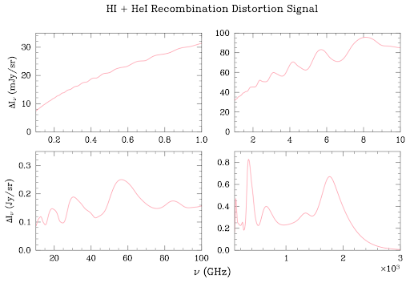
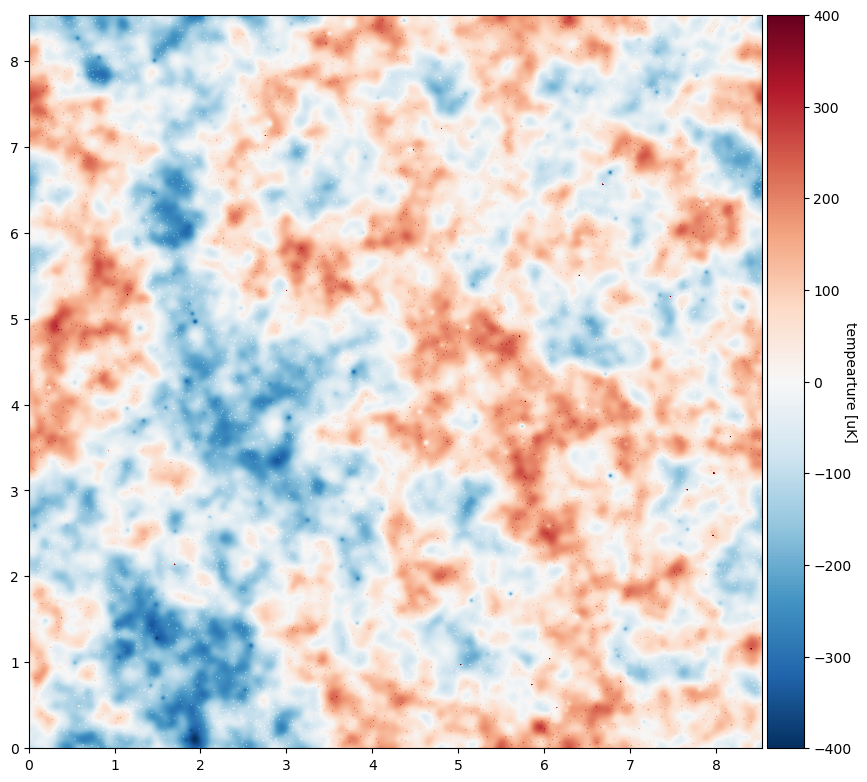
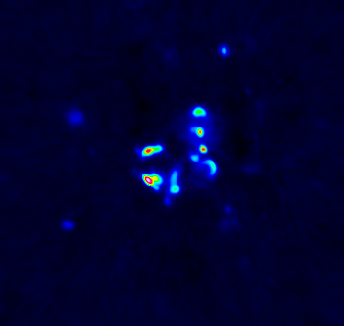

Research Experience
& Interests
I have a wide variety of research interests across CMB cosmology, ranging from
data pipeline development to building backend electronics.
To view my research works,
click here.
Beyond CMB cosmology, I work in RF circuitry, particle cosmology and the
search for axions, and studying the topology of the universe.

The formation of hydrogen and helium during the Epoch of Recombination emitted
photons that should appear as minor distortions of the Cosmic Microwave Background's
spectrum. The expected signal is incredibly weak, so work is being done to forecast
the feasibility of a significant detection. My current work is forecasting a
ground-based detection of the signal from 1-10 GHz.

Detector technology for CMB experiments is constantly evolving and improving.
Testing these devices prior to implementation is crucial. For high-sensitivity CMB experiments
in particular, these devices must maintain their performance at milli-Kelvin temperatures.
I am currently assembling and testing the performance of several antenna-coupled detector
arrays.

Many theoretical particles have been suggested as the components of dark matter, one of
the universe's biggest mysteries. One such particle is the axion, predicted to convert
to a photon in the presence of an incredibly strong magnetic field. We are currently observing
young neutron stars and the galactic center to search for spectral lines that may
correspond to axion mass lines.

Much of my observational work makes uses of spectrometers with high spectral resolution to find faint
signals and tiny lines. I've begun building the backend electronics for a horn antenna spectrometer.
Once the spectrometer is operational, we may cryo-cool the instrument and ensure it is fully mobile,
maybe moving it to another, more optimal location for preliminary observations related to CMB
distortions and axions.

Simons Observatory is currently under construction
and will be the next big piece in studying early-universe cosmology. The telescopes will produce full-sky maps.
In these maps, there will be plenty of known signals to filter out, such as radio-bright quasars and AGN.
I will soon begin to work on developing part of the data reduction pipeline, focusing on the identification
and removal of these sources.

As an undergraduate, I participated in several research projects spanning a range of topics: x-ray and radio
observations of supernova remnant candidates, quantum natural language processing, the mathematical topology
of the universe, astronomy education and lab design, data aquisition software development and implementation,
and participation in ERIRA, a week-long radio astronomy research program held at the Green Bank Observatory in WV.

Astronomy outreach has always been important to me. As an undergraduate, I was the president of the Furman University
Astronomy Club and served as a NASA/JPL Solar System Ambassador, as well as served as a tutor and TA in the physics and
math departments. At UVA, I am involved with Dark Skies, Bright Kids--an outreach program aimed at elementary-aged students
in underserved areas of Virginia.